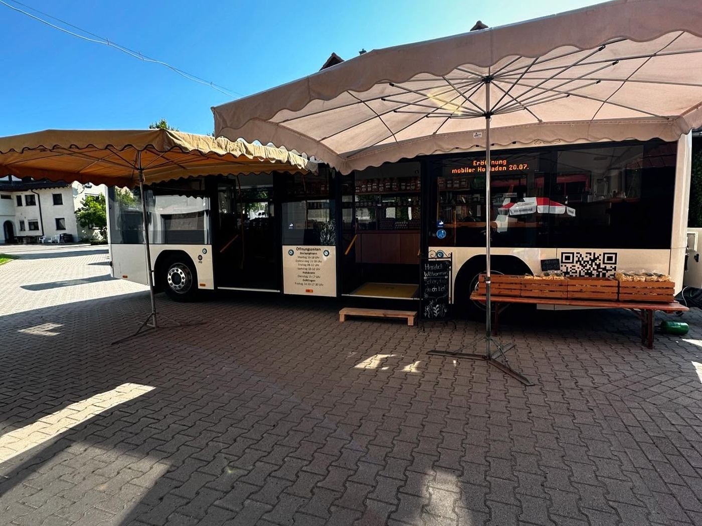

Mobiler Hofladen
Hofbus & Märkte
Mit dem Hofbus und unserem Marktauto bringen wir frische Eier und regionale Lebensmittel zu euch – an fünf Orten, jede Woche zu festen Zeiten.
Alle Stationen auf der Karte
Heute ist …
Wo sind wir gerade?
Alle Stationen
- Hofbus
- Wochenmarkt
- Hofladen & SB-Lädle
Seit Juli 2024
Der Hofbus
Ein umgebauter Bus mit Holzregalen, gezogen vom Traktor. Im Bus findet ihr Eier, Eierlikör, Nudeln, Marmelade, Honig, Wein und mehr. Ihr könnt bar oder mit Karte zahlen.
Mit Marktauto und Stand
Wochenmärkte
Samstags in Gärtringen, mittwochs in Böblingen – dort zusätzlich mit frischem Obst und Gemüse.